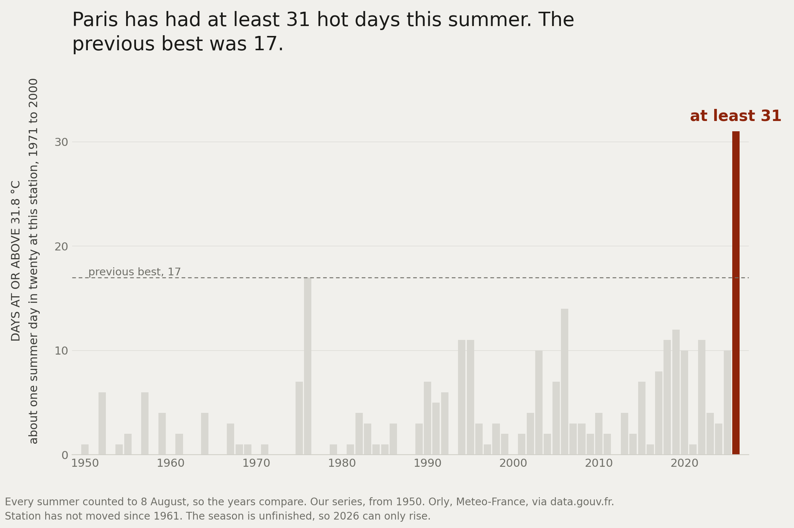
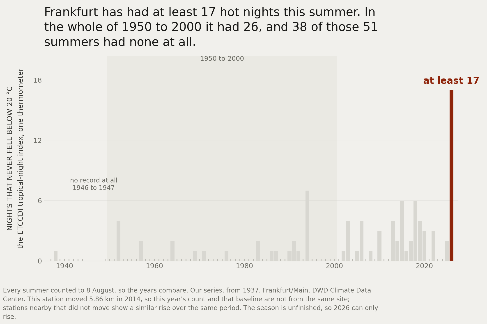

How bad is it?
This year a strong El Niño started. Europe had its heatwaves and its fires. I started to wonder - how bad is it?
Turns out that is not an easy question. There is a great amount of data sitting in different databases, and getting an answer out of it is another thing entirely.
So I started building that.
My grandfather Ülo was a respected scientist and is my biggest idol in this life. While he hoped that I would become one as well, I am no scientist. I am too impatient, I want to test the result right away. I am a builder, an entrepreneur.
A real builder must have science as a foundation. I have been working with scientists and big data for the last 10 years. From Teleport and Topia on relocation, and for the last five years with Arbonics and forestry climate data.
So when I started to tackle "how bad is it?" for this year's climate event, I started from the scientific rigor of how to build it. The results were intriguing and one thing led to another. I decided to bring the different research parts together, and here is thelongswell.com: data based answers on Heat, Fires, Crops and El Niño. How bad is it?
Two things the data has already told me.
Paris had 31 hot days by 8 August this year. In a typical summer between 1961 and 1990, it had two by the same date.

That is one thermometer, at Orly, measured against its own history. Not Paris against Seville, and not against a number someone decided counts as hot everywhere.
Days are only half of it. Heat that does not lift overnight gets counted separately, because the body does most of its recovering when the temperature falls. A hot day you can sit out. A hot week without a cool night is a different thing.
Frankfurt has had 17 nights so far this year that never dropped below 20 °C. Across the whole second half of the twentieth century, 1950 to 2000, it had 26.

Thirty-eight of those fifty-one summers had none at all.
That is the thing I am actually building. Not a dashboard. A way of answering "how bad is it?" that you can check.
Paris. Daily maxima and hot-day counts: Meteo-France via data.gouv.fr, station Orly, record from 1950, every summer counted to 8 August. A hot day is 31.8 °C or above, a level about one summer day in twenty used to reach at this station between 1971 and 2000. The 1961-1990 average to the same date is 2.0 days.
Frankfurt. Daily minima: DWD Climate Data Center, station Frankfurt am Main, ranked series from 1937, every summer counted to 8 August. A tropical night is one whose lowest temperature never falls below 20 °C, the standard ETCCDI TR index. This station moved 5.86 km in 2014, so this year's count and that baseline are not from the same site; stations nearby that did not move show a similar rise over the same period.
Both counts are floors. The season is unfinished, so each can only rise. Read from the Heat channel payload behind thelongswell.com/heat on 10 August 2026.